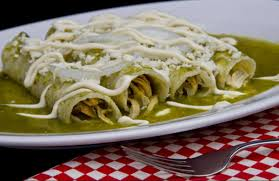

Our best recipes

Ensalada de Quinoa con Vegetales
- Preparación: 15 minutos

Tacos de Pescado
- Preparación: 20 minutos

Pasta con Salsa de Tomate y Albahaca
- Preparación: 30 minutos

Smoothie Verde de Espinacas y Plátano
- Preparación: 5 minutos

Galletas de Avena y Pasas
- Preparación: 25 minutos

Tacos de Pescado al Estilo Baja
- Preparación: 70 minutos